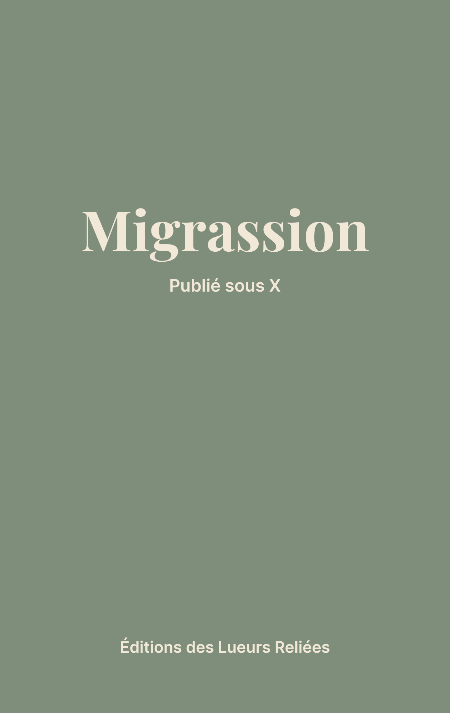

Lueurs Poétiques
Collection de poésie contemporaine
Lueurs Poétiques est l’espace dédié à la poésie au sein des Éditions des Lueurs Reliées.
Cette collection accueille des voix qui explorent le monde par la force du langage. Intimes ou collectives, sociales ou politiques, expérimentales ou lyriques, les œuvres publiées interrogent notre époque, nos sensibilités et nos engagements.
Nous considérons la poésie comme un laboratoire du langage et un miroir sensible de la société contemporaine. Chaque recueil devient ainsi un lieu de dialogue entre l’auteur, le lecteur et les questions qui traversent nos existences.
Fidèle à l’esprit de la maison, chaque ouvrage publié dans la collection Lueurs Poétiques est associé à une cause concrète, par le biais d’un partenariat avec une association en lien avec les thématiques abordées. La poésie y devient alors à la fois création littéraire et acte solidaire.
À la Une

Migrassion — Un recueil poétique anonyme, entre exil et langue
Collection: Lueurs Poétiques — Poésie | Parution prévue pour septembre 2025
Auteur Anonyme — Migrassion« ça dit pas comme je veux mais je dis quand même... »
En savoir plusParcourir les autres collections
Rejoignez les Éditions des Lueurs Reliées : Participez à un projet littéraire engagé !
Les Éditions des Lueurs Reliées ouvrent leurs portes à toutes celles et ceux qui souhaitent contribuer à un projet unique, centré avant tout sur le partage d’écrits personnels.
En savoir plus